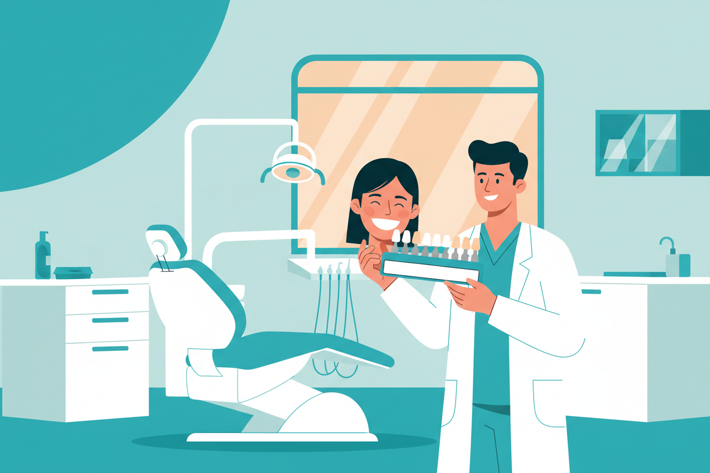

8 Oct 2026 · 4 min read · By Dr. Anish Bharti, M.D.S (Prosthodontics)
Whitening sells because it sounds simple: apply product, wait, smile brighter. The reality has more branches, because tooth discolouration comes in kinds, and the product that fixes one kind does nothing for another. Understanding which kind you have is the entire game, and it takes a dentist about five minutes to tell you.
The two kinds of stains
Surface stains sit on the enamel: tea, coffee, paan, tobacco, and the film that builds up when cleanings are overdue. These come off with professional cleaning, often in a single sitting, and the improvement is immediate. A lot of people who think they need whitening actually need a scaling appointment.
Deep stains live inside the tooth structure and come from years of the same drinks, from ageing, or from certain medicines taken in childhood. No amount of cleaning touches these. This is the category where actual whitening treatment does its work, using peroxide gels that carry oxygen into the enamel and break the stain molecules apart.
Professional whitening
In-clinic whitening uses a high-concentration gel, applied with the gums protected, and typically lifts several shades in one visit of about an hour. Home whitening under a dentist's guidance uses custom trays with a lower-concentration gel worn daily for a couple of weeks. Both work. In-clinic gives the faster result; the tray method tends to hold it longer and costs less. In Kolkata, professional whitening typically runs between ₹5,000 and ₹15,000 depending on the system and how many sessions the colour needs.
What wastes money
Charcoal powders scrub enamel away along with the stain, which leaves teeth thinner, more sensitive, and yellower over time because dentine shows through thinning enamel. Oil pulling has no whitening effect that survives measurement. Beauty-salon kits and online strips of unknown concentration risk chemical burns to the gums, and half of them are strong enough to do nothing except taste expensive. None of these can reach deep stains anyway, so even at their best they only address the surface half of the problem.
Where whitening genuinely cannot help
Fillings, crowns and caps do not change colour. If your visible smile already contains several matching restorations, whitening will leave them standing out, and the plan needs to include replacing them at the new shade. Grey teeth from a dead nerve, and certain antibiotic-related stains from childhood, respond poorly or not at all; those cases belong with veneers or crowns instead. An honest clinic will say this during the check-up rather than after the bill.
Sensitivity for a few days after whitening is normal and settles on its own. Whitening is also not permanent; the shade drifts back over one to three years, faster with heavy tea or coffee, and a top-up session brings it back. If you want it done properly, start with a check-up that identifies your stain type, then choose the treatment that actually matches it.
Thinking about whitening?
We check what kind of staining you have first, because the right treatment depends entirely on the answer.